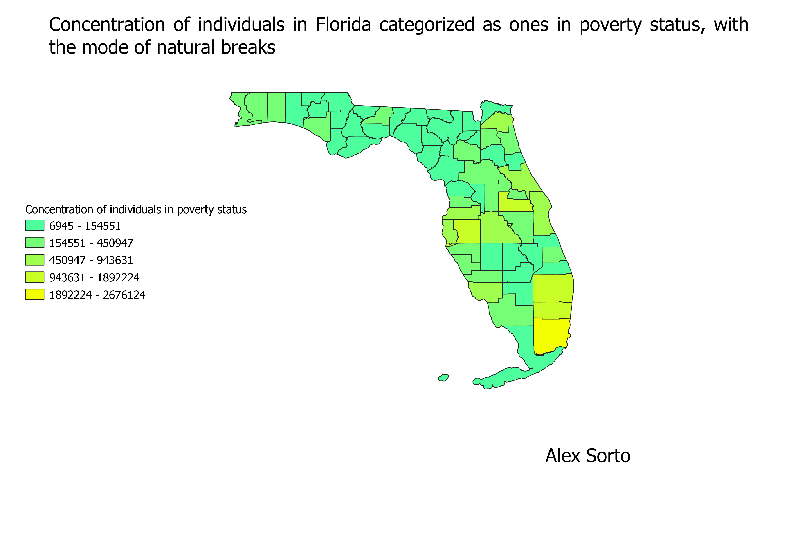

Homework 8: Census data choropleth of Florida:
This homework shows maps that display the concentration of individuals that the US Census identified in 2018 as ones that are in poverty status, with different modes and ratios.
Alex Sorto
This map displays Florida using natural breaks. We can see the concentration of individuals changes greatly throughout the map.

This map displays Florida using natural breaks. We can see the concentration of individuals changes greatly throughout the map.
This map displays Florida using natural breaks. We can see the concentration of individuals changes greatly throughout the map.
Data used for this project
CSV dataset
Link to shapefile